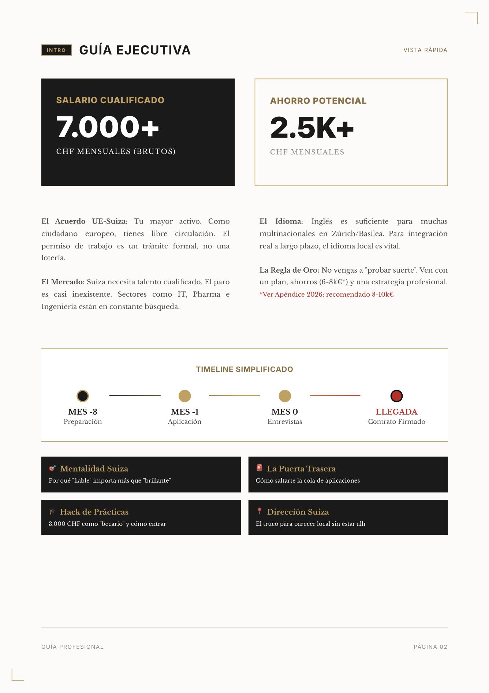
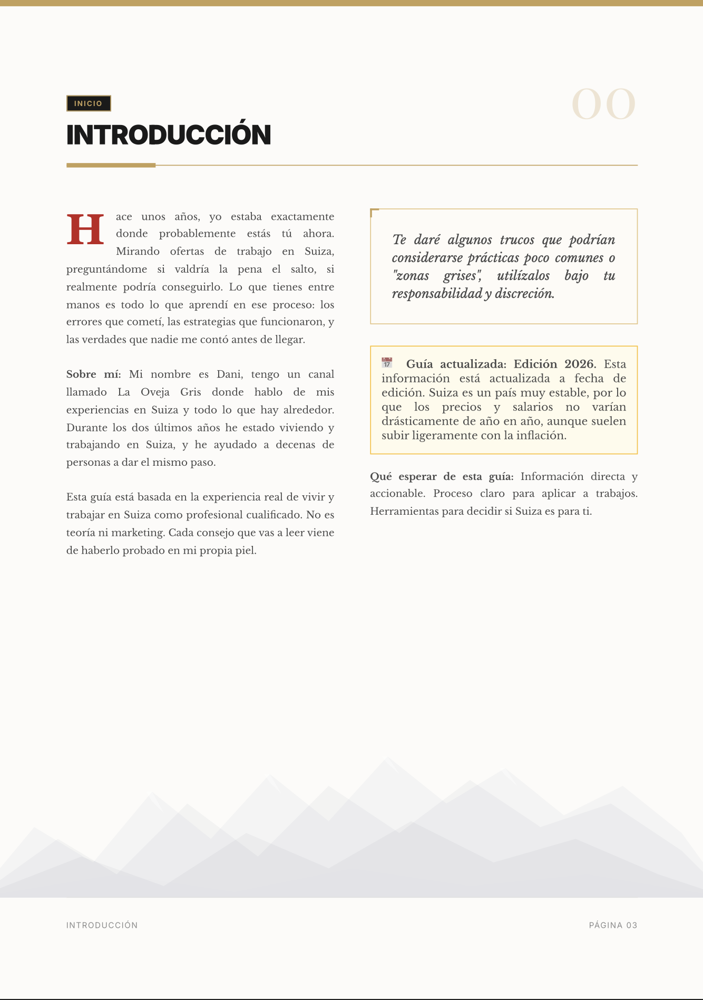

La guía con mi CV real, estrategia de entrevistas y los errores que me costaron miles de euros.
Conseguir la Guía — 197 €No soy consultor de inmigración ni experto en recursos humanos.
Soy una persona normal que:
Ah, y aunque LinkedIn sigue siendo la vía más directa, muchas de mis mejores oportunidades vinieron de otro sitio. De una estrategia que llamo "La Puerta Trasera" y que explico entera en esta guía.
Esta guía es simplemente lo que yo hubiera querido saber antes de venir.
Datos verificados para 2026. No promesas. Números.
Basado en profesional cualificado mid-level (salario medio España ~30.000€/año según INE 2025; Suiza según la Oficina Federal de Estadística). La guía incluye rangos por nivel y ciudad.
Dos intentos. Un fracaso total. Y luego las estrategias que lo cambiaron todo.
"Primer intento: 500€, una caravana en Lausanne, 97 días comiendo pasta. Rechazado en cada entrevista. Segundo intento: 6.000€, habitación en Zúrich, 300 CHF en ropa formal. Primer trabajo en 3 días."→ En la guía explico qué cambié exactamente de una vez a otra.
"Publiqué una oferta falsa en LinkedIn para ver los CVs de mi competencia. Lo que vi me dejó helado: gente con 4-5 idiomas, universidades de élite, portfolios impecables. Pero la buena noticia es que el papel no lo es todo."→ La guía explica por qué aún así puedes ganar, y cómo usé esa información a mi favor.
"Tenía 8 años de experiencia. Rechacé prácticas durante meses porque estaban por debajo de mi nivel. Mi ego me costó meses de inestabilidad. Cuando acepté unas prácticas de 3.000 CHF/mes en una multinacional, ahorraba mil francos al mes y estaba dentro del sistema."→ En la guía explico el "truco de la universidad" que me permitió acceder a ellas.
No es teoría. Es información práctica, directa, sin paja. Como si nos tomáramos un café y te contara lo que sé.
Tu pregunta: "¿Tengo lo que hace falta para competir ahí?"
Lo que tu jefe suizo nunca te dirá pero piensa sobre los españoles. "Calidez latina + Fiabilidad suiza" es la combinación que te hace imbatible. No necesitas ser el mejor CV del montón.
Tu pregunta: "¿Necesito permiso de trabajo? ¿Es complicado?"
Como europeo, tienes las mismas ventajas burocráticas que un suizo. Entras con DNI, 90 días para buscar, permiso automático con contrato. El permiso no es un impedimento, es un trámite.
Tu pregunta: "¿Zúrich o Ginebra? ¿Necesito alemán? ¿Hay trabajo en mi sector?"
Análisis completo por zona con sectores clave y profesiones con ventaja. Si eres farmacéutico, Basilea. Si eres financiero, Zúrich o Ginebra. Si eres ingeniero, zona alemana.
No te voy a mentir: hay sectores donde es más fácil y sectores donde es más jodido. Te cuento cuáles.
Tu pregunta: "¿Cómo consigo trabajo sin contactos ni experiencia suiza?"
LinkedIn es la vía más directa. Pero muchas de mis mejores ofertas vinieron de saltarme la cola: buscar personas en vez de empresas, escribir directamente al que iba a ser mi jefe.
Tu pregunta: "¿Cómo entro en una multinacional si me piden experiencia local?"
En Suiza las prácticas pagan de media 3.000 CHF/mes. Te explico el "truco de la Universidad" para poder acceder a ellas sin ser estudiante a tiempo completo.
Tu pregunta: "¿Mi CV español sirve o tengo que cambiarlo?"
Los errores típicos del CV español que te descalifican. Plantilla del formato suizo incluida. Qué quitar, qué poner, cómo estructurarlo.
Tu pregunta: "¿Cuánto pido? ¿Cómo sé si la oferta es buena?"
Checklist de evaluación con señales rojas. Comparativa fiscal España ~35% vs Suiza ~18%. Desglose de nómina suiza y el Hack de la franquicia máxima para bajar tu seguro médico legalmente.
Para profesionales cualificados en zona alemana (1 CHF ≈ 0,93€)
El proceso completo, paso a paso
Ahorros (8-10 mil€), CV suizo, e-SIM, LinkedIn
5-10 apps/día, entrevistas vídeo
Entrevistas presenciales, negocia +5-10%
Registro, banco, seguro, ¡a trabajar!
Maquetada profesionalmente. Verificada con datos 2026. Una herramienta de trabajo, no un documento de texto.


Incluye datos de 2026 actualizados
Ver el contenido completo — 197 €Fracasé una vez. Volví y lo conseguí. Los detalles están arriba.
Lo que importa aquí: llevo +3 años creando contenido sobre emigrar a Suiza, tengo contacto con decenas de españoles que lo hicieron, y todo lo que sé está en estas páginas.
Depende del sector. En muchas multinacionales de Zúrich y Basilea, el inglés (B2-C1) es suficiente. Pero para integración real a largo plazo, el idioma local es vital. La guía analiza qué sectores exigen idioma local y cuáles no.
Sí. La guía cubre enfermeros, farmacéuticos, financieros, diseñadores, e incluso perfiles creativos. Cada zona lingüística tiene sus sectores fuertes. Incluye guías adicionales por perfil: familias, mayores de 40 y no europeos.
De media, 3 a 6 meses preparándote bien. En sectores de alta demanda (IT, ingeniería), las primeras respuestas pueden llegar en 1-2 semanas. La guía incluye un timeline realista con cada fase.
Recomendación actualizada 2026: entre 8 y 10 mil euros. Los alquileres han subido (una habitación en Zúrich ronda los 1.100-1.300 CHF/mes). La guía explica cómo empezar el proceso desde España.
Sí. En la guía explico el hack de la dirección suiza y cómo conseguir un número suizo con una e-SIM por 8 CHF/mes sin estar allí. Si te llaman a entrevista presencial, prepárate para volar (100-200€ de vuelo que merecen la pena).
Si solo negociases 5.000 CHF más de salario en tu primer trabajo, los 197€ se pagan en una semana. También puede ahorrarte meses aplicando con el CV equivocado, o aceptar una oferta mala sin saber evaluarla. No es un PDF. Es la estrategia que me costó 2 años aprender.
No. Esto no es magia. Tienes que prepararte, tener cualificaciones y necesitas inversión de tiempo y dinero. Mis resultados no garantizan los tuyos. Pero si tienes las cualificaciones y te preparas bien, es totalmente posible. Esta guía te ahorra meses de prueba y error.
Menos de lo que cuesta una noche de hotel mediocre en Zúrich.
+ Actualizaciones gratuitas durante 2026
Esto te puede ahorrar:
Si la diferencia entre negociar 50 mil o 55 mil en tu primer trabajo es de 5.000 CHF/año... los 197€ se pagan solos.
PDF + CV + Excel + Kit Digital
Pago seguro con Gumroad · Descarga instantánea
Hay info gratis por ahí. Pero aquí están las estrategias que no puedo contar en abierto. "La Puerta Trasera", "La Postura del Médico", el truco de la oferta fantasma, mi CV real.
Si estás considerando el cambio en serio, estos 197€ son probablemente la inversión con mejor ROI que harás este año.
Nos vemos dentro,
Dani - La Oveja Gris
P.D. Suiza no es fácil, pero con buena preparación, es totalmente posible.